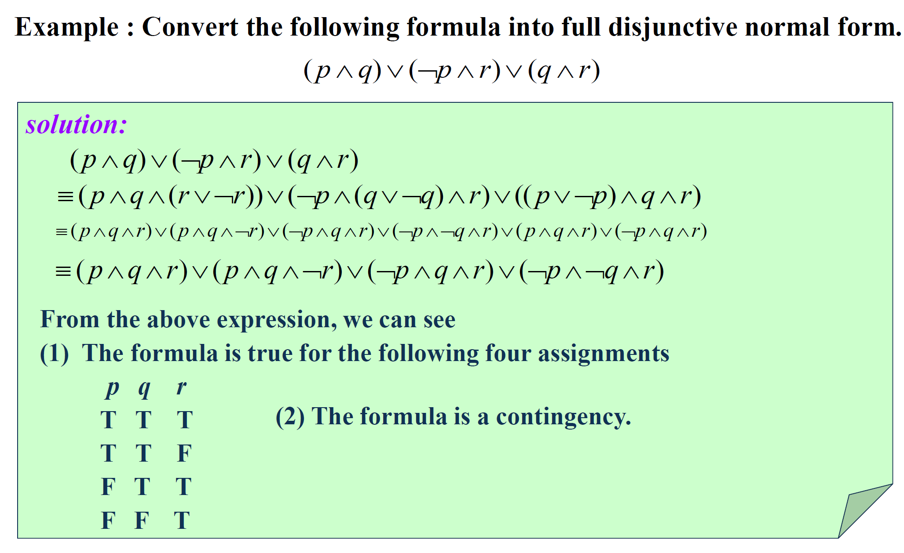
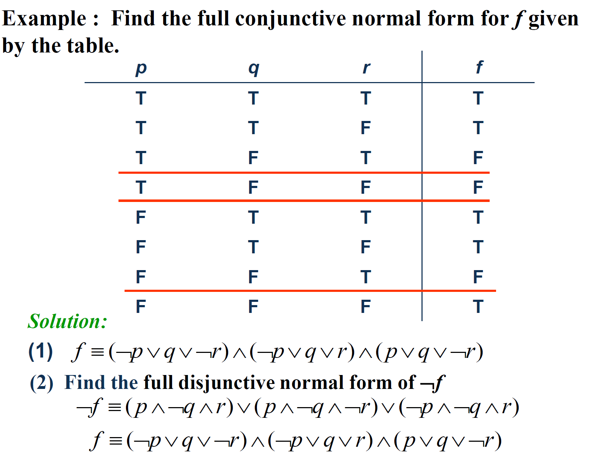

Part 03
Normal Forms
1. Propositional Normal Forms 命题范式
A literal is a variable or its negation.
Conjunctions with literals as conjuncts are called conjunctive clauses (clauses).
命题变量及其否定统称为文字
仅有有限个文字所构成的析取（合取）式称作简单（合取）式
Disjunctions (conjunctions) with one or more literals as disjuncts (conjuncts) are called disjunctive (conjunctive) clauses. 析取（合取）子句
Disjunctive and conjunctive clauses are simply called clauses.
1.1. Two Normal Forms 两类基本范式
1.1.1. Disjunctive Normal Form 析取范式 DNF
A formula is said to be in disjunctive normal form if it is written as a disjunction, in which all the terms are conjunctions of literals.
由有限个简单析取式的合取构成的命题公式称为析取范式
1.1.2. Conjunctive Normal Form 合取范式 CNF
A compound proposition is in Conjunctive Normal Form (CNF) if it is a conjunction of disjunctions.
由有限个简单合取式的析取构成的命题公式称为析取范式
1.2. Identify Normal Forms 判定范式
| p | DNF & CNF |
|---|---|
| ¬p ∨ q | DNF & CNF |
| ¬p ∧ q ∧ ¬r | DNF & CNF |
| ¬p ∨ (q ∧ ¬r) | DNF |
| ¬p ∧ (q ∨ ¬r) ∧ (¬q ∨ r) | CNF |
The trick lies in that in some cases, clauses can be seen as a whole, and as a DNF or CNF.
1.3. How to Obtain Normal Form 产生范式的方法
Faced with → & ↔
p → q ≡ ¬p ∨ q
p ↔ q ≡ (p → q) ∧ (q → p)
Faced with ¬
¬¬p ≡ p
Use of the commutative laws, the distributive laws and the associative laws to obtain normal form

1.4. Full Disjunctive(Conjunctive) Normal Form 主析取（合取）范式
1.4.1. Minterm and Maxterm 极小项、极大项
A minterm is a conjunctive of literals in which each variable is represented exactly once.
A maxterm is a disjunctive of literals in which each variable is represented exactly once.
在含有n个命题变量的简单合取式（简单析取式）中，若每个命题变量和它的否定恰好出现一个且仅出现一次，而且命题变量或它的否定式按下标从小到大或按字典序排列，称这样的简单合取式（简单析取式）为极小项（极大项）
1.4.2. Full Disjunctive(Conjunctive) Normal Form 主析取（合取）范式
If a formula is expressed as a disjunction of minterms, it is said to be in full disjunctive normal form.
If a formula is expressed as a conjunctive of maxterms, it is said to be in full conjunctive normal form.
所有简单合取式（简单析取式）都是极小项（极大项）的析取范式（合取范式）称为主析取范式（主合取范式）
1.4.3. [Important!] the Association Between Normal Forms and Truth Table （重点！）范式与真值表的关系
DNF & Truth Table


The reason why this works:
- Each minterm is true for exactly one assignment.
- If A and B are two distinct minterms, then A ∧ B ≡ F.
- A disjunction of minterms is true only if at least one of its constituents minterms is true.
CNF & Truth Table

1.5. Prenex Normal Form 前束范式
Why we need it?
- simplifies the surface structure of the sentence
- useful to automated theorem proving
is ∀ or ∃ and the formula B is quantifier free
Any expression can be converted into prenex normal form.
1.5.1. How to obtain prenex normal form?
- Eliminate all occurrences of → and ↔ from the formula in question.
- Move all negations inward such that, in the end, negation only appear as part of literals.
- Standardize the variables apart(when necessary).
- The prenex normal form can now be obtained by moving all quantifiers to the front of the formula.
e.g.